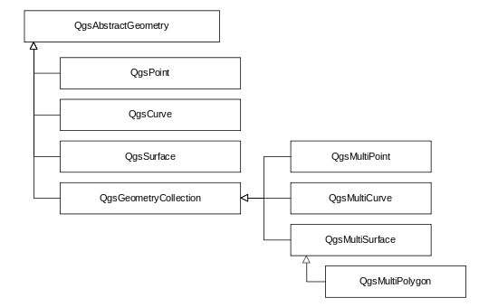

从QGIS源码看GIS矢量数据的组织形式
Table of Contents
矢量数据在内存中的操作需要面对不同的属性字段，想到c++没有java的Object类作为不同数据类型的基类支撑，对c++动态处理属性字段比较疑惑，看了一下QGIS的相关实现。没有像猜测中直接使用指针操作，动态属性字段使用Qt的Variant类实现，通过QVector的方式存储不同的属性数据。
QGIS的矢量数据的组织和OGC的简单要素类（Simple Feature）的实现标准类似，每个矢量数据空间实体使用QgsFeature类的一个对象存储，每个OgsFeature对象有四个主要类成员：
Q_PROPERTY( QgsGeometry geometry READ geometry WRITE setGeometry ) // Feature的几何字段
Q_PROPERTY( QgsFeatureId id READ id WRITE setId ) // Feature的id
Q_PROPERTY( QgsAttributes attributes READ attributes WRITE setAttributes ) // Feature的属性值
Q_PROPERTY( QgsFields fields READ fields WRITE setFields ) // Feature的属性字段
其中QgsGeometry是空间信息的存储方式，负载点线面等空间对象的管理。内部的数据通过私有成员 QgsGeometryPrivate *d 存储，内部包含一个QgsAbstractGeometry智能指针 std::unique_ptr< QgsAbstractGeometry > geometry。QgsAbstractgeometry是几何对象的基类，其子类有QgsCurve、QgsPoint、QgsSurface以及存储多对象的QgsGeometryCollection，如下图：

QgsFields负责属性字段的管理，通常包含多个QgsField，每个QgsField包括以下属性：
Q_PROPERTY( bool isNumeric READ isNumeric )
Q_PROPERTY( bool isDateOrTime READ isDateOrTime )
Q_PROPERTY( int length READ length WRITE setLength )
Q_PROPERTY( int precision READ precision WRITE setPrecision )
Q_PROPERTY( QVariant::Type type READ type WRITE setType )
Q_PROPERTY( QString comment READ comment WRITE setComment )
Q_PROPERTY( QString name READ name WRITE setName )
Q_PROPERTY( QString alias READ alias WRITE setAlias )
Q_PROPERTY( QgsDefaultValue defaultValueDefinition READ defaultValueDefinition WRITE setDefaultValueDefinition )
Q_PROPERTY( QgsFieldConstraints constraints READ constraints WRITE setConstraints )
Q_PROPERTY( ConfigurationFlags configurationFlags READ configurationFlags WRITE setConfigurationFlags )
Q_PROPERTY( bool isReadOnly READ isReadOnly WRITE setReadOnly )
QgsAttributes负责具体的属性存储，为了支持动态数据类型（c++对属性字段的数量和类型不事先定义），直接继承了QVecter类型，如下。其中QVariant是数据类型的基类，可以存放Qt的各种数据类型，不同于Object基类，QVariant可以看作Qt提供的对不同数据类型的一种包装，提供了各种类型数据的管理和转换操作。
QgsAttributes : public QVector<QVariant> {...}